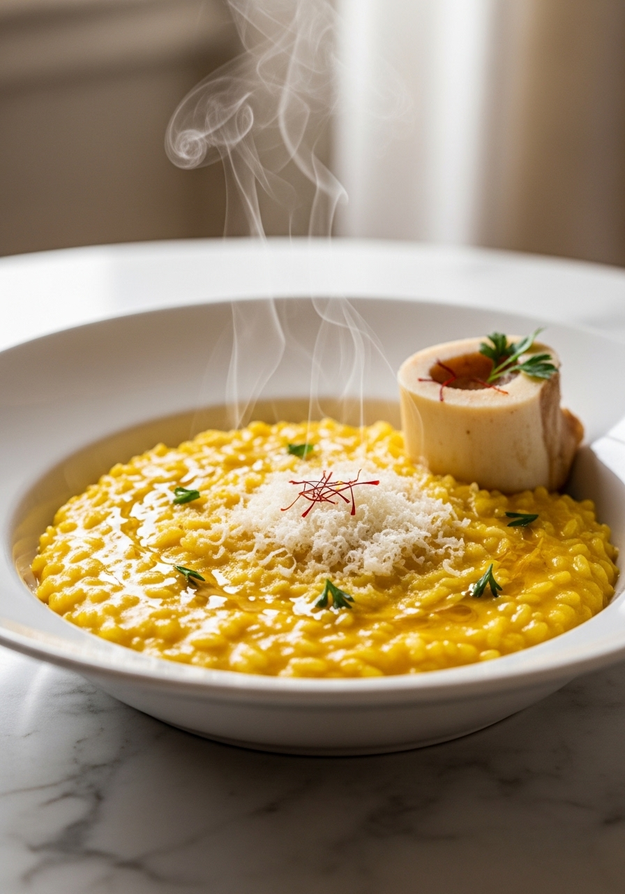
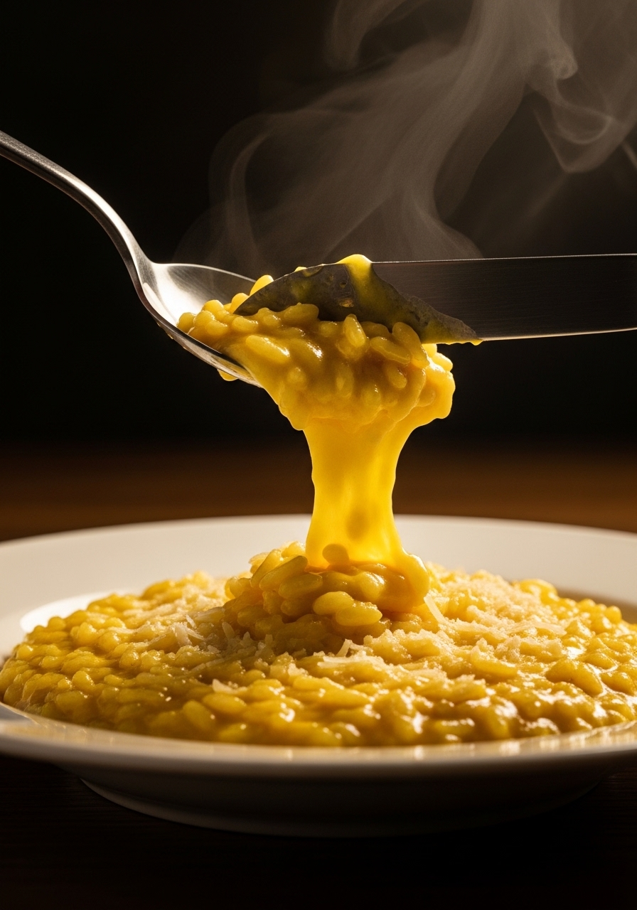

Il risotto alla milanese — o 'risotto giallo' — è il piatto simbolo di Milano. Cremoso, giallo intenso grazie allo zafferano di qualità, con una mantecatura ricca di burro e Parmigiano Reggiano che lo rende vellutato e avvolgente. La chiave del risotto perfetto non è la ricetta, ma la tecnica: il tostare il riso a secco, il brodo aggiunto bollente mestolo per mestolo, e la mantecatura fuori dal fuoco con burro freddo. Tre passi, un capolavoro.

MilaneseLa leggenda vuole che il risotto alla milanese sia nato nel 1574 durante i lavori del Duomo di Milano. Un giovane apprendista del mastro vetraio — soprannominato 'Zafferano' per il suo uso eccessivo della preziosa spezia nelle vetrate — avrebbe aggiunto per scherzo dello zafferano al risotto servito al banchetto nuziale. Il risultato fu così gradito che il piatto rimase nella tradizione milanese per sempre. La realtà storica è altrettanto affascinante: l'uso dello zafferano in cucina a Milano è documentato già nel Rinascimento, quando la spezia arrivava via Venezia dalle rotte commerciali con il Medio Oriente. Oggi lo zafferano dell'Aquila — il più pregiato al mondo — è la scelta dei puristi.
Il Carnaroli è il re del risotto milanese: i suoi chicchi grandi tengono perfettamente la cottura, rilasciano amido gradualmente per la cremosità, e reggono la mantecatura vigorosa. Il Vialone Nano è la scelta veneta — più piccolo, più amidoso, risultato leggermente più morbido. L'Arborio è il più diffuso ma il meno pregiato: i chicchi si rompono facilmente e il risotto tende a diventare colloso. Se vuoi il risotto milanese perfetto, usa sempre il Carnaroli senza esitazione.
Ingredienti
Procedimento

La mantecatura è l'operazione più delicata e più importante del risotto. Consiste nell'aggiungere burro freddo (e Parmigiano) fuori dal fuoco e mescolare vigorosamente per emulsionare i grassi nell'amido del riso. Il burro deve essere freddo da frigorifero: il burro caldo si scioglie subito senza emulsionarsi e il risotto risulta oleoso invece che cremoso. Il movimento giusto è un colpo di polso deciso, quasi a 'sbattere' il risotto contro i bordi della casseruola. Il risultato è un risotto lucido, vellutato, che scorre all'onda ma non è liquido. Va servito entro 2-3 minuti dalla mantecatura — il risotto non attende nessuno.
Sì, ma il sapore sarà meno ricco e più salato. Se usi il dado, scegli uno di qualità biologico senza glutammato e assaggia prima di aggiungere sale. Il brodo fatto in casa con ossobuco e verdure dà un risotto dal sapore nettamente superiore. Se hai tempo, prepara il brodo il giorno prima.
Il risotto appiccicoso si ottiene quando si mescola troppo continuamente, quando il riso viene lavato (perdendo l'amido naturale) o quando si usa Arborio. Mescola con regolarità ma non ossessivamente. Usa Carnaroli per un risultato al dente e non gommoso.
Il risotto non si prepara in anticipo — perde completamente la texture. Esiste però la tecnica della cottura interrotta: cuoci il risotto per 3/4 del tempo, stendilo su una teglia fredda per bloccarne la cottura, e finisci la cottura con l'ultimo brodo e la mantecatura solo al momento di servire. È la tecnica usata dai ristoranti.
Metti il risotto freddo in padella con un mestolo di brodo caldo. Scalda a fuoco medio mescolando energicamente finché torna caldo e cremoso. Aggiungi una noce di burro e una spolverata di Parmigiano. Non scaldare mai al microonde: asciuga il riso e lo rende gommoso.
La dose standard è 0.15g (una bustina di polvere o circa 20-25 pistilli) per 4 porzioni. I pistilli danno un colore più profondo e un profumo più complesso della polvere. Per un colore più intenso puoi arrivare a 0.25g. Lo zafferano DOP dell'Aquila è considerato il migliore al mondo per intensità aromatica.